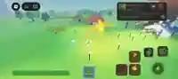

01 — MODELAGEM 3D
Arma estilizada
Modelo 3D de espada com silhueta marcante e acabamento low-poly.
Desenvolvimento de experiências Roblox com ambientes 3D, personagens, sistemas interativos e atenção aos detalhes que tornam cada jogo memorável.

Uma seleção visual de modelos, protótipos e experiências desenvolvidas no universo Roblox.
Modelo 3D de espada com silhueta marcante e acabamento low-poly.
Personagem original com formas expressivas e identidade visual própria.
Objeto 3D com linguagem visual cartoon, pensado para compor um universo de jogo.
Protótipo de Tower Defense com unidades posicionáveis, inimigos, progressão por ondas, economia e interface de batalha.
Interface de preparação de partidas com mapas, dificuldades, recompensas, ondas e composição da equipe.
Construção de cenário 3D com arquitetura temática, vegetação estilizada e composição de ambiente no Studio Lite.
Cenário temático com tabuleiro, peças em escala ampliada, iluminação contrastante e atmosfera de fantasia.
Ambiente aberto com pontos de interesse, construções, vegetação, personagens e elementos de exploração.
Um projeto de jogo vai além do cenário: envolve visual, lógica, interação e experiência do jogador.
Criação e integração de objetos, props, personagens e elementos visuais para compor mundos Roblox.
Construção de mapas, áreas de exploração, arenas e atmosferas temáticas com composição visual.
Desenvolvimento de mecânicas, sistemas de jogo, progressão, interações e lógica de gameplay.
Foco em movimentos naturais, transições fluidas, efeitos e apresentação visual mais envolvente.
Este portfólio reúne estudos, protótipos e projetos do universo Roblox, explorando diferentes frentes do desenvolvimento de jogos: da criação de assets e ambientes tridimensionais à construção de interfaces e mecânicas interativas.
O objetivo é desenvolver experiências com identidade própria, boa apresentação visual e sistemas que façam sentido para quem está jogando.
Tem uma ideia para um jogo, mapa ou experiência Roblox? Vamos conversar.
Meu GitHub ↗